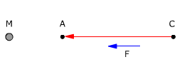
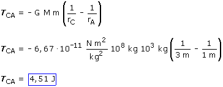

c)
El trabajo será positivo porque la fuerza favorece el desplazamiento (La masa M atrae a m y esta se acerca a ella)


Un trabajo positivo significa que la masa m irá sola desde C hasta A, ganando 4.51 J de energía cinética